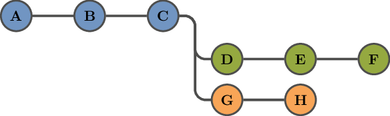
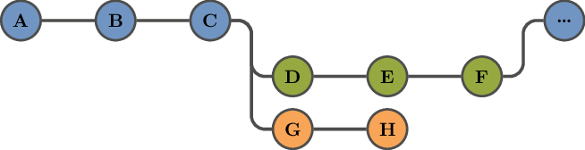

Introduction
These materials aim to support early- and mid-career researchers (EMCRs) in the SPECTRUM and SPARK networks to develop their computing skills, and to make effective use of available tools1 and infrastructure2.
Motivation
The overall aim of these materials is help you conduct code-driven research more efficiently and with greater confidence.
Hopefully some of the following reasons resonate with you.
-
Fearlessly modify your code, knowing that your past work is never lost, by using version control.
-
Verify that your code behaves as expected, and get notified when it doesn't, by writing tests.
-
Ensure that your results won't change when running on a different computer by "baking in" reproducibility.
-
Improve your coding skills, and those of your colleagues, by working collaboratively and making use of peer code review.
-
Run your code quickly, and without relying on your own laptop or computer, by using high-performance computing.
A piece of code is often useful beyond a single project or study.
By applying the above skills in your research, you will be able to easily reproduce past results, extend your code to address new questions and problems, and allow others to build on your code in their own research.
The benefits of good practices can continue to pay off long after the project is finished.
Structure
These materials are divided into the following sections:
-
Understanding version control, which provides you with a complete and annotated history of your work, and with powerful ways to search and examine this history.
-
Learning to use Git, the most widely used version control system, which is the foundation of popular code-hosting services such as GitHub, GitLab, and Bitbucket.
-
Using Git to collaborate with colleagues in a precisely controlled and manageable way.
-
Learn how to structure your project so that it is easier for yourself and others to navigate.
-
Learn how to write code so that it clearly expresses your intent and ideas.
-
Ensuring that your research is reproducible by others.
-
Using testing frameworks to verify that your code behaves as intended, and to automatically detect when you introduce a bug or mistake into your code.
-
Running your code on various computing platforms that allow you to obtain results efficiently and without relying on your own laptop/computer.
-
Case studies where EMCRs showcase how their research activities are enabled and/or supported by these tools.
-
We are organising a Community of Practice that will act as a living curriculum, and will use this section to record the findings and outputs of our community activities.
How to contribute
If you have any comments, feedback, or suggestions, please see the How to contribute page.
License
This work is licensed under a Creative Commons Attribution-ShareAlike 4.0 International License.
Such as version control and testing frameworks.
Such as the ARDC Nectar Research Cloud and Spartan.
Learning objectives
This page defines the learning objectives for individual sections. These are skills that the reader should be able to demonstrate after reading through the relevant section, and completing any exercises in that section.
Version control concepts
After completing this section, you should be able to identify how to apply version control concepts to your existing work. This includes being able to:
-
Identify projects and tasks for which version control would be suitable;
-
Categorise recent work activities into one or more commits;
-
Write commit messages that describe what changes you made and why you made them; and
-
Identify pieces of work that could be carried out in separate branches of a repository.
Effective use of git
After completing this section, you should be able to:
-
Create a local repository;
-
Create commits in your local repository;
-
Search your commit history to identify commits that made a specific change;
-
Create a remote repository;
-
Push commits from your local repository to a remote repository;
-
Pull commits from a remote repository to your local repository;
-
Use tags to identify important milestones;
-
Work in a separate branch and then merge your changes into your main branch; and
-
Resolve merge conflicts.
Collaborating
After completing this section, you should be able to:
-
Share a repository with one or more collaborators;
-
Create a pull request;
-
Use a pull request to review a collaborator's work;
-
Use a pull request to merge a collaborator's work into your main branch; and
-
Conduct peer code review in a respectful manner.
Project structure
After completing this section, you should be able to:
-
Understand how to structure a new project;
-
Understand how to separate "what to do" from "how to do it"; and
-
Structure your code to enable new experiments and analyses.
Writing code
After completing this section, you should be able to:
-
Divide your code into functions and modules;
-
Ensure that your code is a clear expression of your ideas;
-
Structure your code into reusable packages; and
-
Take advantage of code formatters and code linters.
Prerequisites
These materials assume that the reader has a basic knowledge of the Bash command-line shell and using SSH to connect to remote computers. You should be comfortable with using the command-line to perform the following tasks:
- Navigate your files and directories;
- Create, copy, move, and delete files and directories; and
- Work remotely using SSH.
Please refer to the following materials for further details:
- The Unix Shell: an introduction to using Bash.
- Extra Unix Shell Material: additional shell lessons, including SSH.
If you use Windows, you may want to use PowerShell instead of Bash, in which case please refer to this Introduction to the Windows Command Line with Powershell.
Some chapters also assume that the reader has an account on GitHub and has added an SSH key to their account.
Version control concepts
This section provides a high-level introduction to the concepts that you should understand in order to make effective use of version control.
Version control can turn your files into a lab book that captures the broader context of your research activities and that you can easily search and reproduce.
What is version control?
Version control is a way of systematically recording changes to files (such as computer code and data files). This allows you to restore any previous version of a file. More importantly, this history of changes can be queried, and each set of changes can include additional information, such as who made the changes and an explanation of why the changes were made.
A core component of making great decisions is understanding the rationale behind previous decisions. If we don't understand how we got "here", we run the risk of making things much worse.
For academic research activities that involve data analysis or simulation modelling, some key uses of version control are:
-
You can use it as a log book, and capture a detailed and permanent record of every step of your research. This is extremely helpful for people — including you! — who want to understand and make use of your work.
-
You can collaborate with others in a systematic way, ensuring that everyone has access to the most recent files and data, and review everyone's contributions.
-
You can inspect the changes made over a period of interest (e.g., "What have I done in the last week?").
-
You can identify when a specific change occurred, and what other changes were made at the same time (e.g., "What changes did I make that affected this output figure?").
In this book we will focus on the Git version control system, which is used by popular online platforms such as GitHub, GitLab, and Bitbucket.
What is a repository?
A repository records a set of files managed by a version control system, including the historical record of changes made to these files.
You can create as many repositories as you want. Each repository should be a single "thing", such as a research project or a journal article, and should be located in a separate directory.
You will generally have at least two copies of each repository:
-
A local repository on your computer; and
-
A remote repository on a service such as GitHub, or a University-provided platform (such as the University of Melbourne's GitLab instance).
You make changes in your local repository and "push" them to the remote repository. You can share this remote repository with your collaborators and supervisors, and they will be able to see all of the changes that you have pushed.
You can also allow collaborators to push their own changes to the remote repository, and then "pull" them into your local repository. This is one way in which you can use version control to work collaboratively on a project.
What is a commit?
A "commit" is a set of changes to one or more files in a repository. These changes can include:
- Adding lines to a file;
- Removing lines from a file;
- Changing lines in a file;
- Adding new files; and
- Deleting existing files.
Each commit also includes the date and time that it was created, the user that created it, and a commit message.
What should I commit?
A commit should represent a unit of work.
If you've made changes that represent multiple units of work (e.g., changing how input data are processed, and adding a new model parameter) these should be saved as separate commits.
Try describing out loud the changes you have made, and if you find yourself saying something like "I did X and Y and Z", then the changes should probably divided into multiple commits.
A helpful guideline is "commit early, commit often".
Commit early
-
Don't delay creating a commit because "it's not ready yet".
-
A commit doesn't have to be "perfect".
Commit often
-
Small, focused commits are extremely helpful when trying to identify the cause of an unintended change in your code's behaviour or output.
-
There is no such thing as too many commits.
How do I write a commit message?
Commit messages are shown as part of the repository history (e.g., when running git log).
Each message consists of a short one-line description, followed by as much or as little text as required.
You should treat these messages as entries in a log book. Explain what changes were made and why they were made. This can help collaborators understand what we have done, but more importantly is acts as a record for our future selves.
Have you ever looked at code you wrote a long time ago and wondered what you were thinking?
A history of detailed commit messages should allow you to answer this question!
Remember that code is harder to read than it is to write (Joel Spolsky).
For example, rather than writing:
Added model
You could write something like:
Implemented the initial model
This model includes all of the core features that we need to fit the data, but there several other features that we intend to add:
- Parameter X is currently constant, but we may need to allow it to vary over time;
- Parameter Y should probably be a hyperparameter; and
- The population includes age-structured mixing, but we need to also include age-specific outcomes, even though there is very little data to suggest what the age effects might be.
What is a tag?
A tag is a short, unique name that identifies a specific commit. You can use tags as bookmarks for interesting or important commits. Common uses of tags include:
-
Identifying manuscript revisions:
draft-1,submitted-version,revision-1, etc. -
Identifying software package versions:
v1.0,v1.1,v2.0, etc.
What is a branch?
A branch allows you create a series of commits that are separate from the main history of your repository. They can be used for units of work that are too large to be a single commit.
Consider a repository with three commits: commit A, followed by commit B, followed by commit C:
At this point, you might consider two ways to implement a new model feature. One way to do this is to create a separate branch for each implementation:

You can work on each branch, and switch between them, in the same local repository.
If you decide that the first implementation (the green branch) is the best way to proceed, you can then merge this branch back into your main branch. This means that your main branch now contains six commits (A to F), and you can continue adding new commits to your main branch:

What is a merge conflict?
In What is a branch? we presented an example of successfully merging a branch into another. However, when we try to merge one branch into another, we may find that the two branches have conflicting changes. This is known as a merge conflict.
Consider two branches that make conflicting changes to the same line of a file:
-
First line -Second line +My new second line Third line -
First line -Second line +A different second line Third line
There is no way to automatically reconcile these two branches, and we have to fix this conflict manually. This means that we need to decide what the true result should be, edit the file to resolve these conflicting changes, and commit our modifications.
Exercise: using version control
In this section we have introduced version control, and outlined how it can be useful for academic research activities, including:
- Capturing a detailed, annotated record of your research;
- Inspecting changes made between any two moments in time;
- Identifying when a specific change was made; and
- Sharing your research with collaborators.
Have you experienced any issues or challenges in your career where version control would have been helpful? For example:
-
Have you ever looked at some of your older code and had difficulty understanding what it is doing, how it works, or why it was written?
-
Have you ever had difficulties identifying what code and/or data were used to generate a particular analysis or output?
-
Have you ever discovered a bug in your code and tried to identify when it was introduced, or what outputs it might have affected?
-
When collaborating on a research project, have you ever had challenges in making sure that everyone was working with the most recent files?
How can you use version control in your current research project(s)?
-
Do you have an existing project or piece of code that could benefit from being stored in a repository?
-
Have you recently written any code that could be recorded as one or more commits?
-
If so, what would you write for the commit messages?
-
Have you written some exploratory code or analysis that could be stored in a separate branch?
Having looked at the use of version control in the past and present, how would using version control benefit you?
Effective use of git
This section shows how to use the git command-line program to record your work, to inspect your commit history, and to search this commit history to identify commits that make specific changes or have specific effects.
Remember to commit early and commit often. Do not wait until your code is "perfect".
Graphical Git clients
While Git is a command-line program, there are other ways to work with Git repositories:
-
There are many graphical clients that you can download and use;
-
Many editors include Git support (e.g., Atom, RStudio, Visual Studio Code); and
-
Online platforms such as GitHub, GitLab, and Bitbucket also provide a graphical interface for common Git actions.
In this book we will primarily show how to use Git from the command-line, but all of the concepts and terminology should also apply to all of the tools described above. If you don't have Git already installed on your computer, see these instructions for installing Git.
First-time Git setup
Once you've installed Git, you should define some important settings before you starting using Git.
-
Define your user name and email address. These details are included in every commit that you create.
git config --global user.name "My Name" git config --global user.email "my.name@some-university.edu.au" -
Define the text editor that Git should use for tasks such as writing commit messages:
git config --global core.editor editor-nameNOTE: on Windows you need to specify the full path to the editor:
git config --global core.editor "C:/Program Files/My Editor/editor.exe"
Please see Choosing your Git editor for details.
-
By default, Git will create a branch called
masterwhen you create a new repository. You can set a different name for this initial branch:git config --global init.defaultBranch main -
Ensure that repository histories always record when branches were merged:
git config --global merge.ff noThis prevents Git from "fast-forwarding" when the destination branch contains no new commits. For example, it ensures that when you merge the green branch into the blue branch (as shown below) it records that commits D, E, and F came from the green branch.
If you use Windows, there are tools that can improve your Git experience in PowerShell.
There are also tools for integrating Git into many common text editors. See Git in other environments, Appendix A of the Pro Git book.
Choosing your Git editor
In this video, we show how to use nano and vim for writing commit messages. See below for brief instructions on how to use these editors.
This editor is only used for writing commit messages. It is entirely separate from your choice of editor for any other task, such as writing code.
Video timeline:
You can pause the video to select and copy any of the text, such as the git config --global core.editor commands.
How to use nano
Once you have written your commit message, press Ctrl + O and then Enter to save the commit message, then press Ctrl + X to quit the editor.
To quit without saving press Ctrl + X.
If you have made any changes, nano will ask if you want to save them.
Press n to quit without saving these changes.
How to use vim
You need to press i (switch to insert mode) before you can write your commit message. Once you have written your commit message, press Esc and then type :wq to save your changes and quit the editor.
To quit without saving press Esc and then type :q!.
Creating a repository
You can create repositories by running git init.
This will create a .git directory that will contain all of the repository information.
There are two common ways to use git init:
-
Create an empty repository in the current directory, by running:
git init -
Create an empty repository in a specific directory, by running:
git init path/to/repository
Cloning an existing repository
If there is an existing repository that you want to work on, you can "clone" the repository and have a local copy. To do this, you need to know the remote repository's URL.
For GitHub repositories, there should be a green button labelled "Code". Click on this button, and it will provide you with the URL.
You can then make a local copy of the repository by running:
git clone URL
For example, to make a local copy of this book, run the following command:
git clone https://github.com/robmoss/git-is-my-lab-book.git
This will create a local copy in the directory git-is-my-lab-book.
If you have a GitHub account and have set up an SSH key, you can clone GitHub repositories using your SSH key. This will allow you to push commits to the remote repository (if you are permitted to do so) without having to enter your user name and password.
You can obtain the SSH URL from GitHub by clicking on the green "Code" button, and selecting the "SSH" tab.
For example, to make a local copy of this book using SSH, run the following command:
git clone git@github.com:robmoss/git-is-my-lab-book.git
How to structure a repository
While there is no single "best" way to structure a repository, there are some guidelines that you can follow. The key aims are to ensure that your files are logically organised, and that others can easily navigate the repository.
Divide your repository into multiple directories
It is generally a good idea to have separate directories for different types of files. For example, your repository might contain any of these different file types, and you should at least consider storing each of them in a separate directory:
- Input data files (which you may have received from a collaborator);
- Cleaned and/or processed input files (e.g., if you aggregate the input data before using it);
- Data analysis code;
- Simulation/model code;
- Output data files;
- Plotting scripts that extract results from the output data files;
- Output figures produced by the plotting scripts; and
- Manuscript text and bibliography files.
Use descriptive names for directories and files
Choosing file names that indicate what each file/directory contains can help other people, such as your collaborators, navigate your repository. They can also help you when you return to a project after several weeks or months.
Have you ever asked yourself "where is the file that contains X"?
Use descriptive file names, and the answer might be right in front of you!
Include a README file
You can write this in Markdown (README.md), in plain text (README or README.txt), or in any other suitable format.
For example, Python projects often use reStructuredText and have a README.rst file.
This file should begin with a brief description of why the repository was created and what it contains.
Importantly, this file should also mention:
-
How the files and directories are arranged. Help your collaborators understand where they need to look in order to find something.
-
How to run important pieces of code (e.g., to generate output data files or figures).
-
The software packages and/or libraries that are required run any of the code in this repository.
-
The license (if any) under which the repository contents are being made available.
Choosing a license
A license specifies the conditions under which others may use, modify, and/or distribute your work.
Simply making a repository publicly accessible is not sufficient to allow others to make use of your work. Unless you include a license that specifies otherwise, nobody else can copy, distribute, or modify your work.
There are many different types of licenses that you can use, and the number of options can seem overwhelming. But it is usually straightforward to narrow down your options.
-
If you're working on an existing project, the easiest option is to use that project's license.
-
If you're working with an existing community, they may have a preferred license.
-
If you want to choose an open source license, the Choose an open source license website provides advice for selecting a license that meets your needs.
For further information about the various types of available licenses, and some advice for selecting a suitable license for academic software, see A Quick Guide to Software Licensing for the Scientist-Programmer.
Creating a commit
Creating a commit involves two steps:
-
Identify the changes that should be included in the commit. These changes are then "staged" and ready to be included in the next commit.
-
Create a new commit that records these staged changes. This should be accompanied by a useful commit message.
We will now show how to perform these steps.
At any time, you can see a summary of the changes in your repository, and which ones are staged to be committed, by running:
git status
This will show you:
- The files (if any) that contain changes that have been staged;
- The files (if any) that contain changes that have not been staged; and
- The files (if any) that are not recorded in the repository history.
Adding a new file
If you've created a new file, you can include this file in the next commit by running:
git add filename
Adding all changes in an existing file
If you've made changes to an existing file, you can include all of these changes in the next commit by running:
git add filename
Adding some changes in an existing file
If you've made changes to an existing file and only want to include some of these changes in the next commit, you can select the changes to include by running:
git add -p filename
This will show you each of the changes in turn, and allow you select which ones to stage.
This interactive selection mode is very flexible; you can enter ? at any of the prompts to see the range of available actions.
Renaming a file
If you want to rename a file, you can use git mv to rename the file and stage this change for inclusion in the next commit:
git mv filename newname
Removing a file
If you want to remove a file, you can use git rm to remove the file and stage this change for inclusion in the next commit:
git rm filename
If the file has any uncommitted changes, git will refuse to remove the file. You can override this behaviour by running:
git rm --force filename
Inspecting the staged changes
To verify that you have staged all of the desired changes, you can view the staged changes by running:
git diff --cached
You can view the staged changes for a specific file by running:
git diff --cached filename
Undoing a staged change
You may sometimes stage a change for inclusion in the next commit, but decide later that you don't want to include it in the next commit. You can undo staged changes to a file by running:
git restore --staged filename
Creating a new commit
Once you have staged all of the changes that you want to include in the commit, create the commit by running:
git commit
This will open your chosen editor and prompt you to write the commit message.
Note that the commit will not be created until you exit the editor.
If you decide that you don't want to create the commit, you can abort this action by closing your editor without saving a commit message.
Please see Choosing your Git editor for details.
Modifying the most recent commit
After you create a commit, you might decide that there are other changes that should be included in the commit. Git provides a simple way of modifying the most recent commit.
Do not modify the commit if you have already pushed it to another repository. Instead, record a new commit that includes the desired changes.
Remember that your commit history should not be a highly-edited, polished view of your work, but should instead act as a lab book.
Do not worry about creating "perfect" commits!
To modify the most recent commit, stage the changes that you want to commit (see the sections above) and add them to the most recent commit by running:
git commit --amend
This will open your chosen editor and allow you to modify the commit message.
Creating a remote repository
Once you have created a "local" repository (i.e., a repository that exists on your own computer), it is generally a good idea to create a "remote" repository. You may choose to store this remote repository on a service such as GitHub, or on a University-provided platform.
If you are using GitHub, you can choose to create a public repository (viewable by anyone, but you control who can make changes) or a private repository (you control who can view and/or make changes).
Linking your local and remote repositories
Once you have created the remote repository, you need to link it to your local repository. This will allow you to "push" commits from your local repository to the remote repository, and to "pull" commits from the remote repository to your local repository.
When you create a new repository on services such as GitHub, they will give you instructions on how to link this new repository to your local repository. We also provide an example, below.
A repository can be linked to more than one remote repository, so we need to choose a name to identify this remote repository.
In this example, we link our local repository to the remote repository for this book (https://github.com/robmoss/git-is-my-lab-book) with the following command:
git remote add origin git@github.com:robmoss/git-is-my-lab-book.git
Notice that the URL is similar to, but not identical to, the URL you use to view the repository in your web browser.
Pushing and pulling commits
In general, we "push" commits from our local repository to a remote repository by running:
git push <remote-repository>
and "pull" commits from a remote repository into our local repository by running:
git pull <remote-repository>
where <remote-repository> is either a URL or the name of a remote repository.
However, we generally want to push to, and pull from, the same remote repository every time. See the next section for an example of linking the main branch in your local repository with a corresponding "upstream" branch in your remote repository.
Pushing your first commit to a remote repository
In order to push commits from your local repository to a remote repository, we need to create a branch in the remote repository that corresponds to the main branch of our local repository. This requires that you have created at least one commit in your local repository.
This is a good time to create a README.md file and write a brief description of what this repository will contain.
Once you have at least one commit in your local repository, you can create a corresponding upstream branch in the remote repository with the following command:
git push -u origin
Recall that we identify remote repositories by name. In this example, the remote repository is call "origin". You can choose a different name when linking your local and remote repositories.
Once you have defined the upstream branch, you can push commits by running:
git push
and pull commits by running:
git pull
without having to specify the remote repository.
Forcing updates to a remote repository
By default, Git will refuse to push commits from a local branch to a remote branch if the remote branch contains any commits that are not in your local branch. This situation should not arise in general, and typically indicates that either someone else has pushed new commits to the remote branch (see the Collaborating section) or that you have altered the history of your local branch.
If you are absolutely confident that your local history of commits should replace the contents of the remote branch, you can force this update by running:
git push --force
Unless you are confident that you understand why this situation has occurred, it is probably a good idea to ask for advice before running the above command.
How to ignore certain files
Your repository may contain files that you don't want to include in your commit history. For example, you may not want to include files of the following types:
- Sensitive data files for which access must be strictly controlled.
- Temporary files that do not contain useful information, such as:
.auxfiles, which are generated when compiling LaTeX documents; and.pycfiles, which are generated when running Python code.
- Files that can be automatically generated from your commit history, such as:
.pdfversions of LaTeX documents; and- documentation generated from your code files.
You can instruct Git to ignore certain files by creating a .gitignore file.
This is a plain text file, where each line defines a pattern that identifies files and directories which should be ignored.
You can also add comments, which must start with a #, to explain the purpose of these patterns.
If your editor will not accept .gitignore as a file name, you can create a .gitignore file in your repository by running:
touch .gitignore
For example, the following .gitignore file would make Git ignore all .aux and .pyc files, and the file my-paper.pdf:
# Ignore all .aux files generated by LaTeX.
*.aux
# Ignore all byte-code files generated by Python.
*.pyc
# Ignore the PDF version of my paper.
my-paper.pdf
If you have sensitive data files, one option is to store them all in a dedicated directory and add this directory to your .gitignore file:
# Ignore all data files in the "sensitive-data" directory.
sensitive-data
You can force Git to add an ignored file to a commit by running:
git add --force my-paper.pdf
But it would generally be better to update your .gitignore file so that it stops ignoring these files.
How to create and use tags
Tags allow you to bookmark important points in your commit history.
You can use tags to identify milestones such as:
- Adding specific features to your model or data analysis (e.g.,
feature-age-dependent-mixing); - Completing objectives in your research plan (e.g.,
objective-1,objective-2); - Completed manuscript drafts (e.g.,
draft-1,draft-2); and - Manuscript submission and revisions (e.g.,
submitted,revision-1).
Tagging the current commit
You can add a tag (in this example, "my-tag") to the current commit by running:
git tag -a my-tag
This will open your chosen editor and ask you to write a description for this tag.
Pushing tags to a remote repository
By default, git push doesn't push tags to remote repositories.
Instead, you have to explicitly push tags.
You can push a tag (in this example, called "my-tag") to a remote repository (in this example, called "origin") by running:
git push origin my-tag
You can push all of your tags to a remote repository (in this example, called "origin") by running:
git push origin --tags
Tagging a past commit
To add a tag to a previous commit, you can identify the commit by its hash. For example, you can inspect your commit history by running:
git log --oneline --no-decorate
If your commit history looks like:
003cf6b Show how to ignore certain files
339eb5a Show how to prepare and record commits
6a7fb8b Show how to clone remote repositories
...
where the current commit is 003cf6b ("Show how to ignore certain files"), you can tag the previous commit ("Show how to prepare and record commits") by running:
git tag -a my-tag 339eb5a
Listing tags
You can list all tags by running:
git tag
You can also list only tags that match a specific pattern (in this example, all tags beginning with "my") by running:
git tag --list 'my*'
Deleting tags
You can delete a tag by running:
git tag --delete my-tag
Creating a branch from a tag
You can check out a tag and begin working on a new branch by running:
git checkout -b my-branch my-tag
Inspecting your history
You can inspect your commit history at any time with the git log command.
By default, this command will list every commit from the very first commit to the current commit, and for each commit it will show you:
- The commit identifier ("hash"), which uniquely identifies this commit;
- The person who created the commit ("author");
- The date on which the commit was created; and
- The commit message.
There are many ways to adjust which commits and what details that git log will show.
Each commit has a unique identifier ("hash"). These hashes are quite long, but in general you only need to provide the first 5-7 digits to uniquely identify a specific commit.
Listing commits over a specific time interval
You can limit which commits git log will show by specifying a start time and/or an end time.
This can be extremely useful for generating progress reports and summarising your recent activity in team meetings.
For example, you can view commits from the past week by running:
git log --since='7 days'
git log --since='1 week'
You can view commits made between 1 and 2 weeks ago by running:
git log --since='2 weeks' --until='1 week'
You can view commits made between specific dates by running:
git log --since='2022/05/12' --until='2022/05/14'
Listing commits that modify a specific file
You can see which commits have made changes to a file by running:
git log -- filename
Note the -- argument that comes before the file name.
This ensures that if the file name begins with a -, git log will not treat the file name as an option.
Changing how commits are displayed
You can make git log display only the first 7 digits of each commit hash, and the first line of each commit message, by running:
git log --oneline
This can be a useful way to get a quick overview of the recent history.
Viewing the contents of a single commit
You can identify a commit by its unique identifier ("hash") or by its tag name (if it has been tagged), and view the commit with git show:
git show commit-hash
git show tag-name
This will show the commit details and all of the changes that were recorded in this commit.
Viewing all changes over a specific interval
You can view all of the changes that were made between two commits with the git diff command.
The git diff command shows the difference between two points in your commit history.
Note that git diff does not support start and/or end times like git log does; you must use commit identifiers.
For example, here is a subset of the commit history for this book's repository:
95eaae5 Note the need for a GitHub account and SSH key
11085f0 Show how to create a branch from a tag
9369482 Show how to create and use tags
003cf6b Show how to ignore certain files
339eb5a Show how to prepare and record commits
6a7fb8b Show how to clone remote repositories
6a49e10 Note that mdbook-admonish must be installed
a8e6114 Fixed the URL for the UoM GitLab instance
5192704 Add a merge conflict exercise
We can view all of the changes that were made after the bottom commit (5192704, "Add a merge conflict exercise") up to and including the top commit (95eaae5, "Note the need for a GitHub account and SSH key") by running:
git diff 5192704..95eaae5
In the above example, 8 files were changed, with a total of 310 new lines and 7 deleted lines. This is a lot of information! You can print a summary of these changes by running:
git diff --stat 5192704..95eaae5
This should show you the following details:
README.md | 2 +-
src/SUMMARY.md | 3 +
src/prerequisites.md | 2 +
src/using-git/cloning-an-existing-repository.md | 36 ++++++++++
src/using-git/creating-a-commit.md | 146 +++++++++++++++++++++++++++++++++++++--
src/using-git/how-to-create-and-use-tags.md | 89 ++++++++++++++++++++++++
src/using-git/how-to-ignore-certain-files.md | 37 ++++++++++
src/version-control/what-is-a-repository.md | 2 +-
8 files changed, 310 insertions(+), 7 deletions(-)
This reveals that about half of the changes (146 new/deleted lines) were made to src/using-git/creating-a-commit.md.
Viewing changes to a file over a specific interval
Similar to the git log command, you can limit the files that the git diff command will examine.
For example, you can display only the changes made to README.md in the above example by running:
git diff 5192704..95eaae5 -- README.md
This should show you the following change:
diff --git a/README.md b/README.md
index 7956b65..a34f907 100644
--- a/README.md
+++ b/README.md
@@ -15,7 +15,7 @@ This work is licensed under a [Creative Commons Attribution-ShareAlike 4.0 Inter
## Building the book
-You can build this book by installing [mdBook](https://rust-lang.github.io/mdBook/) and running the following command in this directory:
+You can build this book by installing [mdBook](https://rust-lang.github.io/mdBook/) and [mdbook-admonish](https://github.com/tommilligan/mdbook-admonish/), and running the following command in this directory:
```shell
mdbook build
Where did this line come from?
Consider the What should I commit? chapter. Imagine that we want to know when and why the following text was added:
A helpful guideline is "**commit early, commit often**".
If we can identify the relevant commit, we can then inspect the commit (using git show <commit>) to see all of the changes that it introduced.
Ideally, the commit message will explain the reasons why this commit was made.
This is one way in which your commit messages can act as a lab book.
At the time of writing (commit 2a96324), the contents of the What should I commit? came from two commits:
git log --oneline src/version-control/what-should-I-commit.md
3dfff1f Add notes about committing early and often
9be780b Briefly describe key version control concepts
We can use the git blame command to identify the commit that last modified each line in this file:
git blame -s src/version-control/what-should-I-commit.md
9be780b8 1) # What should I commit?
9be780b8 2)
9be780b8 3) A commit should represent a **unit of work**.
9be780b8 4)
9be780b8 5) If you've made changes that represent multiple units of work (e.g., changing how input data are processed, and adding a new model parameter) these should be saved as separate commits.
9be780b8 6)
9be780b8 7) Try describing out loud the changes you have made, and if you find yourself saying something like "I did X and Y and Z", then the changes should probably divided into multiple commits.
3dfff1fe 8)
3dfff1fe 9) A helpful guideline is "**commit early, commit often**".
3dfff1fe 10)
3dfff1fe 11) ## Commit early
3dfff1fe 12)
3dfff1fe 13) - Don't delay creating a commit because "it's not ready yet".
3dfff1fe 14)
3dfff1fe 15) - A commit doesn't have to be "perfect".
3dfff1fe 16)
3dfff1fe 17) ## Commit often
3dfff1fe 18)
3dfff1fe 19) - Small, focused commits are **extremely helpful** when trying to identify the cause of an unintended change in your code's behaviour or output.
3dfff1fe 20)
3dfff1fe 21) - There is no such thing as too many commits.
You can see that the first seven lines were last modified by commit 9be780b (Briefly describe key version control concepts), while the rest of the file was last modified by commit 3dfff1f (Add notes about committing early and often).
So the text that we're interested in (line 9) was introduced by commit 3dfff1f.
You can inspect this commit by running the following command:
git show 3dfff1f
Where did this problem come from?
Let's find the commit that created the file src/version-control/what-is-a-repository.md.
We could find this out using git log, but the point here is to illustrate how to use a script to find the commit that causes any arbitrary change to our repository.
Once the commit has been found, you can inspect it (using git show <commit>) to see all of the changes this commit introduced and the commit message that (hopefully) explains the reasons why this commit was made.
This is one way in which your commit messages can act as a lab book.
-
Create a Python script called
my_test.pywith the following contents:#!/usr/bin/env python3 from pathlib import Path import sys expected_file = Path('src') / 'version-control' / 'what-is-a-repository.md' if expected_file.exists(): # This file is the "new" thing that we want to detect. sys.exit(1) else: # The file does not exist, this commit is "old". sys.exit(0)For reference, here is an equivalent R script:
#!/usr/bin/Rscript --vanilla expected_file <- file.path('src', 'version-control', 'what-is-a-repository.md') if (file.exists(expected_file)) { # This file is the "new" thing that we want to detect. quit(status = 1) } else { # The file does not exist, this commit is "old". quit(status = 0) } -
Select the commit range over which to search. We know that the file exists in the commit
3dfff1f(Add notes about committing early and often), and it did not exist in the very first commit (5a19b02). -
Instruct Git to start searching with the following command:
git bisect start 3dfff1f 5a19b02Note that we specify the newer commit first, and then the older commit.
Git will inform you about the search progress, and which commit is currently being investigated.
Bisecting: 7 revisions left to test after this (roughly 3 steps) [92f1375db21dd8a35ca141365a477b963dbbf6dc] Add CC-BY-SA license text and badge -
Instruct Git to use the script
my_test.pyto check each commit with the following command:git bisect run ./my_test.pyIt will continue to report the search progress and automatically identify the commit that we're looking for:
running './my_test.py' Bisecting: 3 revisions left to test after this (roughly 2 steps) [9be780b8785d67ee191b2c0b113270059c9e0c3a] Briefly describe key version control concepts running './my_test.py' Bisecting: 1 revision left to test after this (roughly 1 step) [055906f28da146a2d012b7c1c0e4707503ed1b11] Display example commit message as plain text running './my_test.py' Bisecting: 0 revisions left to test after this (roughly 0 steps) [1251357ab5b41d511deb48cd5386cae37eec6751] Rename the "What is a repository?" source file running './my_test.py' 1251357ab5b41d511deb48cd5386cae37eec6751 is the first bad commit commit 1251357ab5b41d511deb48cd5386cae37eec6751 Author: Rob Moss <robm.dev@gmail.com> Date: Sun Apr 17 21:41:43 2022 +1000 Rename the "What is a repository?" source file The file name was missing the word "a" and did not match the title. src/SUMMARY.md | 2 +- src/version-control/what-is-a-repository.md | 18 ++++++++++++++++++ src/version-control/what-is-repository.md | 18 ------------------ 3 files changed, 19 insertions(+), 19 deletions(-) create mode 100644 src/version-control/what-is-a-repository.md delete mode 100644 src/version-control/what-is-repository.md -
To quit the search and return to your current commit, run the following command:
git bisect reset -
You can then inspect this commit by running the following command:
git show 1251357
How to use branches?
Recall that branches allow you to work on different ideas or tasks in parallel, within a single repository. In this chapter, we will show you how create and use branches. In the Collaborating section, we will show you how branches can allow multiple people to work together on code and papers, and how you can use branches for peer code review.
Branches, like tags, are identified by name. Common naming conventions include:
feature/some-new-thingfor adding something new (a new data analysis, a new model feature, etc); andbugfix/some-problemfor fixing something that isn't working as intended (e.g., perhaps there's a mistake in a data analysis script).
You can choose your own conventions, but make sure that you choose meaningful names.
Do not use names like branch1, branch2, etc.
Creating a new branch
You can create a new branch (in this example, called "my-new-branch") that starts from the current commit by running:
git checkout -b my-new-branch
You can also create a new branch that starts from a specific commit, tag, or branch in your repository:
git checkout -b my-new-branch 95eaae5 # From an existing commit
git checkout -b my-new-branch my-tag-name # From an existing tag
git checkout -b my-new-branch my-other-branch # From an existing branch
You can then create a corresponding upstream branch in your remote repository (in this example, called "origin") by running:
git push -u origin
Working on a remote branch
If there is a branch in your remote repository that you want to work on, you can make a local copy by running:
git checkout remote-branch-name
This will create a local branch with the same name (in this example, "remote-branch-name").
Listing branches
You can list all of the branches in your repository by running:
git branch
This will also highlight the current branch.
Switching between branches
You can switch from your current branch to another branch (in this example, called "other-branch") by running:
git checkout other-branch
Git will not let you switch branches if you have any uncommitted changes.
One way to avoid this issue is to record the current changes as a new commit, and explain in the commit message that this is a snapshot of work in progress.
A second option is to discard the uncommitted changes to each file by running:
git restore file1 file2 file3 ... fileN
Pushing and pulling commits
Once you have created a branch, you can use git push to "push" your commits to the remote repository, and git pull to "pull" commits from the remote repository.
See Pushing and pulling commits for details.
Inspecting branch histories
You can use git log to inspect the commit history of any branch:
git log branch-name
Remember that there are many ways to control what git log will show you.
Similarly, you can use git diff to compare the changes in any two branches:
git diff first-branch second-branch
Again, there are ways to control what git diff will show you.
Merging branches
You may reach a point where you want to incorporate the changes from one branch into another branch. This is referred to as "merging" one branch into another, and is illustrated in the What is a branch? chapter.
For example, you might have completed a new feature for your model or data analysis, and now want to merge this back into your main branch.
First, ensure that the current branch is the branch you want to merge the changes into (this is often your main or master branch). You can them merge the changes from another branch (in this example, called "other-branch") by running:
git merge other-branch
This can have two different results:
-
The commits from
other-branchwere merged successfully into the current branch; or -
There were conflicting changes (referred to as a "merge conflict").
In the next chapter we will show you how to resolve merge conflicts.
How to resolve merge conflicts?
A merge conflict can occur when we try to merge one branch into another, if the two branches introduce any conflicting changes.
For example, consider trying to merge two branches that make the following changes to the same line of the file test.txt:
-
On the branch
my-new-branch:First line -Second line +My new second line Third line -
On the main branch:
First line -Second line +A different second line Third line
When we attempt to merge my-new-branch into the main branch, git merge my-new-branch will tell us:
Auto-merging test.txt
CONFLICT (content): Merge conflict in test.txt
Automatic merge failed; fix conflicts and then commit the result.
The test.txt file will now include the conflicting changes, which we can inspect with git diff:
diff --cc test.txt
index 18712c4,bc576a6..0000000
--- a/test.txt
+++ b/test.txt
@@@ -1,3 -1,3 +1,7 @@@
First line
++<<<<<<< ours
+A different second line
++=======
+ My new second line
++>>>>>>> theirs
Third line
Note that this two-day diff shows:
- "our" changes: from the commits on the branch that we are merging into; and
- "their" changes: from the commits on the branch that we are merging from.
Each conflict is surrounded by <<<<<<< and >>>>>>> markers, and the conflicting changes are separated by a ======= marker.
Resolving the conflicts
We can edit test.txt to reconcile these changes, and the commit our fix.
For example, we might decide that test.txt should have the following contents:
First line
The corrected second line
Third line
We can then commit these changes to resolve the merge conflict:
git add test.txt
git commit -m "Resolved the merge conflict"
Cancelling the merge
Alternatively, you may decide you don't want to merge these two branches, in which case you cancel the merge by running:
git merge --abort
Exercise: create a local repository
In this exercise you will create a local repository, and use this repository to create multiple commits, switch between branches, and inspect the repository history.
-
Create a new, empty repository in a directory called
git-exercise. -
Create a
README.mdfile and write a brief description for this repository. Record the contents ofREADME.mdin a new commit, and write a commit message. -
Write a script that generates a small data set, and saves the data to a CSV file. For example, this script could sample values from a probability distribution with fixed shape parameters. Explain how to use this script in
README.md. Record your changes in a new commit. -
Write a script that plots these data, and saves the figure in a suitable file format. Explain how to use this script in
README.md. Record your changes in a new commit. -
Add a tag
milestone-1to the commit you created in the previous step. -
Create a new branch called
feature/new-data. Check out this branch and modify the data-generation script so that it produces new data and/or more data. Record your changes in one or more new commits. -
Create a new branch called
feature/summarisefrom the tag you created in step #5. Check out this branch and modify the plotting script so that it also prints some summary statistics of the data. Record your changes in one or more new commits. -
In your
mainormasterbranch, and add a license. Record your changes in a new commit. -
In your
mainormasterbranch, merge the two feature branches created in steps #6 and #7, and add a new tagmilestone-2.
Self evaluation
Now that you have started a repository, created commits in multiple branches, and merged these branches, here are some questions for you to consider:
-
Have you committed the generated data file and/or the plot figure?
-
If you haven't committed either or both of these files, have you instructed
gitto ignore them? -
Did you add a meaningful description to each milestone tag?
-
How many commits modified your data-generation script?
-
How many commits modified your plotting script?
-
What changes, if any, were made to
README.mdsince it was first created?
Exercise: use a remote repository
In this exercise, you will use a remote repository to synchronise and merge changes between multiple local repositories, starting from the local git-exercise repository that you created in the previous exercise.
Create a remote repository
-
Create a new remote repository on a platform such as GitHub. You can make this a private repository, because you won't need to share it with anyone.
-
Link your local
git-exerciserepository to this remote repository, and push all branches and tags to this remote repository.
Clone the remote repository
-
Make a local copy of this remote repository called
git-exercise-2. -
Check out the
mainormasterbranch. The files should be identical to themilestone-2tag in your originalgit-exerciserepository.
Work on the new local repository
-
Create a new branch called
feature/report. Check out this branch and create a new file calledreport.md. Edit this file so that it contains:- A brief description of the generated data set;
- A table of the summary statistics printed by the plotting scripting (see the Markdown Guide); and
- The figure produced by the plotting script (see the Markdown Guide).
Record your changes in a new commit.
-
Push this new branch to the remote repository.
Merge the report into the original repository
-
In your original
git-exerciserepository, checkout thefeature/reportbranch from the remote repository and verify that it now contains the filereport.md. -
Merge this branch into your
mainormasterbranch, and add a new tagmilestone-3-report. -
Push the updated
mainormasterbranch to the remote repository.
Update the new local repository
- In your
git-exercise-2repository, checkout themainormasterbranch and pull changes from the remote repository. It should now contain the filereport.md.
Congratulations! You have used a remote repository to synchronise and merge changes between two local repositories. You can use this workflow to collaborate with colleagues.
Self evaluation
Now that you have used commits and branches to share work between multiple repositories, here are some questions for you to consider:
-
Do you feel comfortable in deciding which changes to record in a single commit?
-
Do you feel that your commit messages help describe the changes that you have made in this repository?
-
Do you feel comfortable in using multiple branches to work on separate ideas in parallel?
-
Do you have any current projects that you might want to work on using local and remote
gitrepositories?
Exercise: resolve a merge conflict
We have created a public repository that you can use to try resolving a merge conflict yourself. This repository includes some example data and a script that performs some basic data analysis.
First, obtain a local copy (a "clone") of this repository by running:
git clone https://github.com/robmoss/gimlb-simple-merge-example.git
cd gimlb-simple-merge-example
The repository history
You can inspect the repository history by running git log.
Some key details to notice are:
-
The first commit created the following files:
README.mdLICENSEanalysis/initial_exploration.Rinput_data/data.csv
-
The second commit created the following file:
outputs/summary.csv
This commit has been given the tag
first_milestone. -
From this
first_milestonetag, two branches were created:-
The
feature/second-data-setbranch adds a second data set and updates the analysis script to inspect both data sets. -
The
feature/calculate-rate-of-changebranch changes which summary statistics are calculated for the original data set.
-
-
The
example-solutionbranch merges both feature branches and resolves any merge conflicts. This branch has been given the tagsecond_milestone.
Your task
You will start with the master branch, which contains the commits up to the first_milestone tag, and then merge the two feature branches into this branch, resolving any merge conflicts that arise.
You can then compare your results to the example-solution branch.
-
Obtain a local copy of this repository, by running:
git clone https://github.com/robmoss/gimlb-simple-merge-example.git cd gimlb-simple-merge-example -
Create local copies of the two feature branches and the example solution, by running:
git checkout feature/second-data-set git checkout feature/calculate-rate-of-change git checkout example-solution -
Return to the
masterbranch, by running:git checkout master -
Merge the
feature/second-data-setbranch intomaster, by running:git merge feature/second-data-set -
Merge the
feature/calculate-rate-of-changebranch intomaster, by running:git merge feature/calculate-rate-of-changeThis will result in a merge conflict, and now you need to decide how to resolve each conflict! Once you have resolved the conflicts, create a commit that records all of your changes (see the previous chapter for an example).
You may find it helpful to inspect the commits in each of the feature branches to understand how they have changed the files in which the conflicts have occurred.
Self evaluation
Once you have created a commit that resolves these conflicts, see how similar or different the contents of your commit are to the corresponding commit in the example-solution branch (which has been tagged second_milestone).
You can inspect this commit by running:
git show example-solution
You can compare this commit to your solution by running:
git diff example-solution
How does your resolution compare to this commit?
You may have resolved the conflicts differently to the example-solution branch, and that's perfectly fine as long as they have the same effect.
Example solution
Here we present a recorded terminal session in which we clone this repository and resolve the merge conflict.
You can use the video timeline (below) to jump to specific moments in this exercise. Remember that you can pause the recording at any point to select and copy any of the text.
Video timeline:
- Start: a quick look around
- Create local copies of branches
- Inspect the
feature/second-data-setbranch - Inspect the
feature/calculate-rate-of-changebranch - Merge the
feature/second-data-setbranch - Merge the
feature/calculate-rate-of-changebranch - Resolve the merge conflicts
- Compare to the example solution
Collaborating
This section demonstrates how to use Git for collaborative research, enabling multiple people to work on the same code or paper in parallel. This includes deciding how to structure your repository, how to use branches for each collaborator, and how to use tags to track your progress.
We also show how these skills support peer code review, so that you can share knowledge with, and learn from, your colleagues as part of your regular activity.
Collaborating on code
Once you are comfortable with creating commits, working in branches, and merging branches, you can use these skills to write code collaboratively as a team.
The precise workflow will depend on the nature of your research and on the collaborators in your team, but there are some general guidelines that you may find helpful:
-
Agree on a style guide.
-
Work on separate features in separate branches.
-
Use peer code review before merging changes from these branches.
-
Consider using continuous integration to:
- Run test cases and detect bugs as early as possible; and
- Verify that code meets your chosen style guide.
Collaborating on a paper
Once you are comfortable with creating commits, working in branches, and merging branches, you can use these skills to write papers collaboratively as a team. This approach is particularly useful if you are writing a paper in LaTeX.
Here are some general guidelines that you may find useful:
-
Divide the paper into separate LaTeX files for each section.
-
Use tags to identify milestones such as draft versions and revisions.
-
Consider creating a separate branch for each collaborator.
- Merge these branches when completing a major draft or revision.
-
Use latexdiff to show tracked changes between the current version and a previous commit/tag:
latexdiff-git --flatten -r tag-name paper.tex -
Collaborators who will provide feedback, rather than contributing directly to the writing process, can do this by:
- Annotating PDF versions of the paper; or
- Providing comments in response to a merge/pull request.
Sharing a repository
The easiest way to share a repository with collaborators is to have a single remote repository that all collaborators can access. This repository could be located on a platform such as GitHub, GitLab, or Bitbucket, or on a platform provided by your University or Institute.
Theses platforms allow you to create public repositories and private repositories.
-
Everybody can view the contents of a public repository.
-
You control who can view the contents of a private repository.
-
For both types of repository, you control who can make changes to the repository, such as creating commits and branches.
Giving collaborators access to your remote repository
The steps required to do this differ depending on which platform you are using. Here, we will describe how to give collaborators access to a repository on GitHub. For further details, see the GitHub documentation.
-
Open the main page of your GitHub repository.
-
Click on the "Settings" tab in the top navigation bar.
-
Click on the "Collaborators" item in the left sidebar.
-
Click on the "Add people" button.
-
Search for collaborators by entering their GitHub user name, their full name, or their email address.
-
Click the "Add
to this repository" button.
This will send an invitation to the collaborator. If they accept this invitation, they will have access to your repository.
Sharing a branch
You might want a collaborator to work on a specific branch of your repository, so that you can keep their changes separate from your own work. Remember that you can merge commits from their branch into your own branches at any time.
You need to ensure that your collaborator has access to the remote repository.
-
Create a new branch for the collaborator, and give it a descriptive name.
git checkout -b collab/jamieIn this example we created a branch called "collab/jamie", where "collab" is a prefix used to identify branches intended for collaborators, and the collaborator is called Jamie.
Remember that you can choose your own naming conventions.
-
Push this branch to your remote repository:
git push -u origin -
Your collaborator can then make a local copy of this branch:
git clone --single-branch --branch collab/jamie repository-url -
They can then create commits and push them to your remote repository with
git push.
Merge/Pull requests
Recall that incorporating the changes from one branch into another branch is referred to as a "merge". You can merge one branch into another branch by taking the following steps:
-
Checking out the branch you want to merge the changes into:
git checkout -b my-branch -
Merging the changes from the other branch:
git merge other-branch
It's a good idea to review these changes before you merge them.
If possible, it's even better to have someone else review the changes.
You can use git diff to view differences between branches.
However, platforms such as GitHub and GitLab offer an easier approach: "pull requests" (also called "merge requests").
Creating a pull request on GitHub
The steps required to create a pull request differ depending on which platform you are using. Here, we will describe how to create a pull request on GitHub. For further details, see the GitHub documentation.
-
Open the main page of your GitHub repository.
-
In the "Branch" menu, select the branch that contains the changes you want to merge.
-
Open the "Contribute" menu. This should be located on the right-hand side, above the list of files.
-
Click the "Open pull request" button.
-
In the "base" menu, select the branch you want to merge the changes into.
-
Enter a descriptive title for the pull request.
-
In the message editor, write a summary of the changes in this branch, and identify specific questions or objectives that you want the reviewer to address.
-
Select potential reviewers by clicking on the "Reviewers" link in the right-hand sidebar.
-
Click the "Create pull request" button.
Once the pull request has been created, the reviewer(s) can review your changes and discuss their feedback and suggestions with you.
Merging a pull request on GitHub
When the pull request has been reviewed to your satisfaction, you can merge these changes by clicking the "Merge pull request" button.
If the pull request has merge conflicts (e.g., if the branch you're merging into contains new commits), you will need to resolve these conflicts.
For further details about merging pull requests on GitHub, see the GitHub documentation.
An example pull request
The initial draft of each chapter in this section were proposed in a pull request.
When this pull request was created, the branch added four new commits:
85594bf Add some guidelines for collaboration workflows
678499b Discuss coding style guides
2b9ff70 Discuss merge/pull requests and peer code review
6cc6f54 Discuss repository structure and licenses
and the author (Rob Moss) asked the reviewer (Eamon Conway) to address several details in particular.
Eamon made several suggestions in their initial response, including:
-
Moving the How to structure a repository and Choosing a license chapters to the Effective use of git section;
-
Starting this section with the Collaborating on code chapter; and
-
Agreeing that we should use this pull request as an example in this book.
In response, Rob pushed two commits that addressed the first two points above:
e1d1dd9 Move collaboration guidelines to the start
3f78ef8 Move the repository structure and license chapters
and then wrote this chapter to show how we used a pull request to draft this book section.
Peer code review
Once you're comfortable in using merge/pull requests to review changes in a branch, you can use this approach for peer code review.
Remember that code review is a discussion and critique of a person's work. The code author will naturally feel that they own the code, and the reviewer needs to respect this.
For further advice and suggestions on how to conduct peer code review, please see the Performing peer code review references.
Define the goals of a peer review
In creating a pull request and inviting someone to review your work, the pull request description should include the following details:
-
An overview of the work included in the pull request: what have you done, why have you done it?
-
You may also want to explain how this work fits into the broader context of your research project.
-
Identify specific questions or tasks that you would like the reviewer to address. For example, you might ask the reviewer to address one or more of the following questions:
-
Can the reviewer run your code and reproduce the outputs?
-
Is the code easy to understand?
-
If you have a style guide, is the code formatted appropriately?
-
Do the model equation or data analysis steps seem sensible?
-
If you have written documentation, is it easy to understand?
-
Can the reviewer suggest how to improve or rewrite a specific piece of code?
-
Finding a reviewer
On GitHub we have started a peer-review team. We encourage you to post on the discussion board, to find like-minded members to review your code.
Guidelines for reviewing other people's code
Peer code review is an opportunity for the author and the reviewer to learn from each other and improve a piece of code.
The most important guideline for the reviewer is to be kind.
Treat other people's code the way you would want them to treat your code.
-
Avoid saying "you". Instead, say "we" or make the code the subject of the sentence.
-
Don't say "You don't have a test for this function", but instead say "We should test this function".
-
Don't say "Why did you write it this way?", but instead say "What are the advantages of this approach?".
-
-
Ask questions rather than stating criticisms.
- Don't say "This code is unclear", but instead say "Can you help me understand how this code works?".
-
Treat peer review as an opportunity to praise good work!
-
Don't be afraid to tell the author that a piece of code was very clear, easy to understand, or well written.
-
Tell the author if reading their code made you aware of a useful function or package.
-
Tell the author if reading their code gave you some ideas for your own code.
-
Complete the review
Once the peer code review is complete, and any corresponding updates to the code have been made, you can merge the branch.
Retain a record of the review
By using merge/pull requests to review code, the discussion between the author and the reviewer is recorded. This can be a useful reference for future code reviews.
Try to record all of the discussion in the pull request comments, even if the author and reviewer meet in person, so that you have a complete record of the review.
Coding style guides
A style guide defines rules and guidelines for how to structure and format your code. This can make code easier to write, because you don't need to worry about how to format your code. It can also make code easier to read, because consistent styling allows you to focus on the content.
There are two types of tools that can help you use a style guide:
-
A formatter formats your code to make it consistent with a specific style; and
-
A linter checks whether your code is consistent with a specific style.
Recommended style guides
Because programming languages can be very different from each other, style guides are usually defined for a single programming language.
Here we list some of the most widely-used style guides for several common programming languages:
-
For R there is a tidyverse style guide.
-
For Python there is Black, which defines a coding style and applies this style to your code.
-
For C++ there is a Google C++ style guide.
Continuous integration
Continuous Integration (CI) is an automated process where code changes are merged in a central repository in order to run automated tests and other processes. This can provide rapid feedback while you develop your code and collaborate with others, as long as commits are regularly pushed to the central repository.
This book is an example of Continuous Integration: every time a commit is pushed to the central repository, the online book is automatically updated.
Because the central repository is hosted on GitHub, we use GitHub Actions. Note that this is a GitHub-specific CI system. You can view the update action for this book here.
We also use CI to publish each pull request, so that contributions can be previewed during the review process. We added this feature in this pull request.
Project structure
How we choose to structure a project can affect how readily someone else — or even yourself, after a period of absence — can understand, use, and extend the work. A good project structure can serve as a table of contents and help the reader to navigate.
In an earlier section we provided some guidelines for how to structure a repository. In this section we present further guidelines and examples to help you choose a sensible structure for your current project and future projects.
This includes high-level recommendations that should apply to any project, and more detailed recommendations that may be specific to a particular type of project or choice of programming language.
Define your workflow
A good first step in deciding how to structure a project is to ask yourself:
-
What are the different project phases?
-
What are the major activities in each phase?
An example of phases and activities
For example, a project might involve the following phases:
-
Clean an existing data set;
-
Build models with different hypotheses or features;
-
Fit each model to the data; and
-
Decide which model best explains the data.
The data-cleaning phase might involve the following activities:
-
Obtain the raw data;
-
Identify the quality checks that should be applied;
-
Decide how to resolve data that fail each quality check; and
-
Generate and record the cleaned data.
The model-building phase might involve the following activities:
-
Perform a literature search to identify relevant modelling studies;
-
Identify competing hypotheses or features that might explain the data;
-
Design a model that implements each hypothesis; and
-
Define the relationship between each model and the cleaned data.
Reflect this workflow in your project structure
You can use the phases and activities to guide your choice of directory structure. For this example project, one possible structure is:
-
project/: the root directory of your project-
input/: a sub-directory that contains input data;-
raw/: the raw data before cleaning; -
cleaned/: the cleaned data;
-
-
code/: a sub-directory that contains the project code;-
cleaning/: the data cleaning code; -
model-first-hypothesis/: the first model; -
model-second-hypothesis/: the second model; -
fitting/: the code that fits each model to the data; -
evaluation/: the code the compares the model fits; -
plotting/: the code that plots output figures;
-
-
paper/: a sub-directory for the project manuscript;figures/: the output figures;
-
Automate common tasks
If you reach the point where you need to run a specific sequence of commands or actions to achieve something — e.g., running a model simulation, or producing an output figure — it is a very good idea to write a script that performs all of these actions correctly.
This is because while you may remember exactly what needs to be done right now, you may not remember next week, or next month, or next year. We're all human, and we all make mistakes, but these kinds of mistakes are easy to avoid!
There are many tools that can help you to automate tasks, some of which are smart enough that they will only do as little as possible (e.g., avoid re-running steps if the inputs have not changed).
There are popular tools aimed at specific programming languages, such as:
There are many generic automation tools (see, e.g., Wikipedia's list of build automation software), although these can be rather complex to learn. We recommend using a language-specific automation tool where possible, and only using a generic automation tool as a last resort.
Explain how it all works
Once you've chosen a project structure, you need to write down how it all works — regardless of how simple and clear your project structure is!
Begin with an overview of the project:
-
What question(s) are you trying to address?
-
What data, hypotheses, methods, etc, are you using?
-
What outputs does this generate?
You can then provide further detail, such as:
-
What software environment and/or packages must be available for your code to run?
-
How can the user generate each of the outputs?
-
What license have you chosen?
An example README.md
See the Australian 2020 COVID-19 forecasts repository for an example README.md file.
This repository was used to generate the results, tables, and figures presented in the paper "Forecasting COVID-19 activity in Australia to support pandemic response: May to October 2020", Scientific Reports 13, 8763 (2023).
Strengths:
-
It includes installation and usage instructions;
-
It identifies the paper; and
-
It identifies the license under which the code is distributed.
Weaknesses:
-
It only explains some of the project structure.
-
It doesn't provide an overview of the project, it only links to the paper.
-
The root directory contains a number of scripts and input files that aren't described.
Exercise: what works for you?
Look back at your past projects and identify aspects of their structure that you have found helpful.
-
What features or choices have worked well in past projects and might help you structure your future projects?
-
What problems or issues have you experienced with the structure of your past projects, which you could avoid in your future projects?
-
Can any of your colleagues and collaborators share similar insights?
Writing code
For computational research, code is an important scientific artefact for the author, for colleagues and collaborators, and for the scientific community. It is the ultimate form of expressing what you did and how you did it. With good version control and documentation practices, it can also capture when and why you made important decisions.
[W]e want to establish the idea that a computer language is not just a way of getting a computer to perform operations but rather that it is a novel formal medium for expressing ideas about methodology. Thus, programs must be written for people to read, and only incidentally for machines to execute.
— Structure and Interpretation of Computer Programs. Abelson, Sussman, and Sussman, 1984.
How we learn to write code
Unless you studied Software Engineering, you may never have had any formal training. And that's okay! Nobody writes perfect code.
There are various resources available (including this book) that can help you to improve your coding skills. But the most effective way to improve is to write code and get feedback.
You can practice shooting eight hours a day, but if your technique is wrong, then all you become is very good at shooting the wrong way.
— Michael Jordan
How we learn to write papers
Throughout our research careers, we are continually learning and developing our ability to write scientific papers. One of the main ways that we develop this ability is to seek feedback early and often, by circulating drafts to co-authors, supervisors, and trusted colleagues.
This feedback not only helps us improve the paper that we're currently working on, but also improves our ability to write papers in the future.
We gradually learn how to express ourselves clearly at multiple levels:
-
Writing individual sentences that clearly convey a single thought or observation;
-
Constructing paragraphs that span a single topic or idea;
-
Structuring an entire paper so that the reader can easily navigate it.
How we currently learn to code
Many of us learn to write code as a by-product of our chosen research area, and may not have any formal computer programming training. However, while we may make our finished code available as a support material for our published papers, we don't typically show our code to our co-authors.
While there are many reasons why we are reluctant to share our code, perhaps the biggest factor is a sense of shame. We may feel that our code is "bad" — too bad to share with others! — and that if we've ever made a mistake in our code, we're the only person who has ever done so.
This is simply untrue!
How we should learn to code
We should treat writing code the same way that we treat writing papers, grant applications, and fellowship applications: seek feedback early, and seek feedback often.
Wouldn't you prefer that the first person who looks at your code is a trusted colleague, rather than a random person who has read your paper and now wants to see how the code works?
Peer code review offers a structured way to:
-
Discuss and critique a person's work in a kind and supportive manner;
-
Praise good work;
-
Identify where code is well-structured and clear, and where it could be improved; and
-
Share relevant knowledge and expertise.
Similar to writing papers, we should seek feedback at multiple levels:
-
Are individual lines of code clear and correct?
-
Are strongly-related lines of code grouped into functions that each do a single thing?
-
Are functions grouped into modules that focus on specific aspects or features?
-
Can the reader easily navigate the code?
Cohesion and coupling
Divide your code into modules, each of which does one thing ("high cohesion") and depends as little as possible on other pieces ("low coupling").
Common project components
For example, an infectious diseases modelling project might often be divided into some of the following components:
-
The model parameters — what are their values or prior distributions?
-
The initial model state — how is this created from the model parameters?
-
The model equations or update rules — how does the model evolve over time?
-
Summary statistics — what do you want to record for each simulation? This might be the entire state history, a subset of the history, some aggregate statistics, or any combination of these things.
-
The input data (if any) — these may be case data, serological data, within-host specimen counts, etc.
-
The relationship between data and the model state ("observation model").
-
Simulated data generated from a model simulation.
As much as possible, each of these components (where relevant to your project) should be represented as a separate piece of code.
Separating the "what" from the "how"
Dividing your code into separate components is especially important if you want to use a model for multiple purposes, such as:
- Exploring different scenarios;
- Fitting to various data sets;
- Performing sensitivity and uncertainty analyses; and
- Forecasting future data.
In particular, keep the following aspects of your project separate:
-
What to do: fitting to different data sets, exploring different scenarios, performing a sensitivity analysis, etc; and
-
How to do it: the model implementation.
If you want to explore a range of model scenarios, for example, define the parameter values (or sampling distributions) for each scenario in a separate input file. Then write a script that takes an input file name as an argument, reads the parameter values, and uses these values to run the model simulations.
This makes it extremely simple to define and run new scenarios without modifying your code.
Interactions between components
Choosing how your components interact (e.g., by calling functions or passing data) is just as important as deciding how to divide your code into components.
Here are some key recommendations from Object-Oriented Software Construction (2nd ed):
-
Small interfaces: if two modules communicate, they should exchange as little information as possible.
-
Explicit interfaces: if two modules communicate, it should be obvious from the code in one or both of these modules.
-
Self documentation: strive to make all information about a module part of the module itself.
Behave nicely
Would you feel comfortable running someone else's code if you thought it might affect your other files, applications, settings, or do something else that's unexpected?
Your code should be encapsulated: it should assume as little as possible about the computer on which it is running, and it shouldn't mess with the user's environment.
Your code should follow the principal of least surprise: behave in a way that most users will expect it to behave, and not astonish or surprise them.
A cake analogy
Suppose you have two colleagues who regularly bake cakes, and you decide you'd like one of them to bake you a lemon cake with chocolate icing.
-
A nice colleague: you ask your colleague to bake a lemon cake with chocolate icing.
- That evening, they go home and bake a cake.
- They bring the cake to work the next day.
- The cake tastes of lemon and is topped with chocolate icing.
-
A messy colleague: you ask your colleague to bake a lemon cake with chocolate icing.
- They reply that they will make a cake
- The next day, they come into your office with the ingredients and a portable oven.
- They begin mixing ingredients, making a huge mess on your desk.
- You have to wait until the batter is mixed before they ask you for your choice of flavour.
- They don't have lemons, but add some orange zest to the batter.
- Once the cake is baked, they let it cool.
- One hour later they ask you what flavour icing you want.
- They don't have chocolate or cocoa, so they a different icing.
- They give you the cake.
- The cake tastes of orange and is topped with strawberry icing.
- Your office is covered in flour, sugar, and cake batter.
Some specific tips
-
Avoid modifying files outside of the project directory!
-
Avoid using hard-coded absolute paths, such as
C:\Users\My Name\Some Project\...or/Users/My Name/Some other directory. These make it harder for other people to use the code, or to run the code on high-performance computing platforms. -
Prefer using paths that are relative to the root directory of your project, such as
input-data/case-data/cases-for-2023.csv.
Coding advice
-
Think about how to cleanly structure your code. Take a similar approach to how we write papers and grants.
-
Break the overall problem into pieces, and then decide how to structure each piece in turn.
-
Divide your code into functions that each do one "thing", and group related functions into separate files or modules.
-
It can sometimes help to think about how you want the final code to look, and then design the functions and components that are needed.
-
Avoid global variables, aim to pass everything as function arguments. This makes the code more robust and easier to run.
-
Avoid passing lots of individual parameters as separate arguments, this is prone to error — you might not pass them in the correct order. Instead, collect the parameters into a single structure (e.g, a Python dictionary, an R named list).
-
Avoid making multiple copies of a model if you want to change some aspect of its behaviour. Instead, add a new model parameter that enables/disables this new behaviour. This allows you to use the same code to run the older and newer versions of the model.
-
Try to collect common or related tasks into a single script, and allow the user to select which task(s) to run, rather than creating many scripts that perform very similar tasks.
-
Write test cases to check key model properties.
-
You want to identify problems and mistakes as soon as possible!
-
Thinking about how to make your code testable can help you improve its structure!
-
Well-written tests can also demonstrate how to use your code!
-
Create packages
For languages such as R, Python, and Julia, it is generally a good idea to write your code as a package/library. This can make it easier to install and run your code on a new computer, on a high-performance computing platform, and for others to use on their own computers.
This is a simple process and entirely separate from publishing your package or making it publicly available.
It also means you can avoid using source() in R, or adding directories to sys.path in Python.
To create a package you need to provide some necessary information, such as a package name, and the list of the packages that your code depends on ("dependencies"). You can then use packaging tools to verify that you've correctly identified these dependencies and that your package can be successfully installed and used!
This is an important step towards ensuring your work is reproducible.
There are some great online resources that can help you get started. We list here some widely-recommended resources for specific languages.
Writing R packages
For R, see R Packages (2nd ed) and the devtools package.
Other useful references include:
- rOpenSci Packages: Development, Maintenance, and Peer Review;
- Writing an R package from scratch by Hilary Parker;
- How to develop good R packages by Maëlle Salmon;
- Making your first R package by Fong Chun Chan; and
- Writing an R package from scratch by Tomas Westlake.
Writing Python packages
The Python Packaging User Guide provides a tutorial on Packaging Python Projects.
Other useful references include:
-
The pyOpenSci project also provide a Python Packaging Guide. This includes information about code style, formatting, and linters.
-
This example Python project demonstrates one way of structuring a Python project as a package.
Writing Julia Packages
The Julia's package manager documentation provides a guide to Creating Packages
Check your code
A "linter" is a tool that checks your code for syntax errors, possible mistakes, inconsistent formatting, and other potential issues.
We strongly recommend using an editor that displays linter warnings as you write your code. Having instant feedback allows you to rapidly resolve many common issues and substantially improve your code.
We list here some of the most commonly used linters:
Format your code
Have you ever looked at someone else's code and found it hard to read because they formatted it differently to your code?
Using a consistent code style can help make your code more legible and accessible to others, in much the same way that standard use of punctuation and spacing makes written text easier to read.
Good coding style is like using correct punctuation: you can manage without it, butitsuremakesthingseasiertoread.
— Hadley Wickham, the tidyverse style guide
We strongly recommend using an editor that can automatically format your code whenever you save. This allows you to completely forget about formatting and focus on the content.
We list here some of the most commonly used style guides and code formatters:
| Language | Style guide(s) | Formatter |
|---|---|---|
| R | tidyverse | styler |
| Python | PEP 8 and The Hitchhiker's Style Guide | black |
| Julia | style guide | Lint.jl |
Exercise: seek feedback
One goal to keep in mind is to ensure your work is conceptually accessible: how readily could someone else (or even yourself, after a period of absence) understand your code?
- Seek feedback on some code that you are currently writing — before the code is "finished". You may want to refer to our peer code review guidelines and consider what you want to learn.
Reproducibility
This section demonstrates how to use version control and software testing to ensure that your research results can be independently reproduced by others.
Reproducibility is just as much about simple work habits as the tools used to share data and code.
Testing
This section introduces the topic of software testing. Testing your code is an important part of any code-based research activity. Tests check whether your code behaves as intended, and can warn you if you introduce a bug or mistake into your code.
Tests can show the presence of bugs, but not their absence.
Cloud and HPC platforms
This section introduces computing platforms that allow you to generate outputs more quickly, and without relying on your own laptop or desktop computer. It also demonstrates how to use version control to ensure that the code running on these platforms is the same as the code on your laptop.
Case studies
This section contains interesting and useful examples of incorporating Git into a research activity, as contributed by EMCRs in our network.
Fixing a bug in pypfilt
Author: Rob Moss (rgmoss@unimelb.edu.au)
Project: pypfilt, a bootstrap particle filter for Python
Date: 27 October 2021
Overview
I introduced a bug when I modified a function in my pypfilt package, and only detected the bug after I had created several more commits.
To resolve this bug, I had to:
-
Notice the bug;
-
Identify the cause of the bug;
-
Write a test case to check whether the bug is present; and
-
Fix the bug.
Notice the bug
I noticed that a regression test1 was failing: re-running a set of model simulations was no longer generating the same output. The results had changed, but none of my recent commits should have had this effect.
I should have noticed this when I created the commit that introduced this bug, but:
-
I had not pushed the most recent commits to the upstream repository, where all of the test cases are run automatically every time a new commit is pushed; and
-
I had not run the test cases on my laptop after making each of the recent commits, because this takes a few minutes and I was lazy.
Identify the cause of the bug
I knew that the bug had been introduced quite recently, and I knew that it affected a specific function: earlier_states().
Running git blame src/pypfilt/state.py indicated that the recent commit 408b5f1 was a likely culprit, because it changed many lines in this function.
In particular, I suspected the bug was occurring in the following loop, which steps backwards in time and handles the case where model simulations are reordered:
# Start with the parent indices for the current particles, which allow us
# to look back one time-step.
parent_ixs = np.copy(hist['prev_ix'][ix])
# Continue looking back one time-step, and only update the parent indices
# at time-step T if the particles were resampled at time-step T+1.
for i in range(1, steps):
step_ix = ix - i
if hist['resampled'][step_ix + 1, 0]:
parent_ixs = hist['prev_ix'][step_ix, parent_ixs]
In stepping through this code, I identified that the following line was incorrect:
if hist['resampled'][step_ix + 1, 0]:
and that changing step_ix + 1 to step_ix should fix the bug.
Note: I could have used git bisect to identify the commit that introduced this bug, but running all of the test cases for each commit is relatively time-consuming; since I knew that the bug had been introduced quite recently, I chose to use git blame.
Write a test case
I wrote a test case test_earlier_state() that called this earlier_states() function a number of times, and checked that each set of model simulations were returned in the correct order.
This test case checks that:
-
If the model simulations were not reordered, the original ordering is always returned;
-
If the model simulations were reordered at some time
t_0, the original ordering is returned for timest < t_0; and -
If the model simulations were reordered at some time
t_0, the new ordering is returned for timest >= t_0.
This test case failed when I reran the testing pipeline, which indicated that it identified the bug.
Fix the bug
With the test case now written, I was able to verify that that changing step_ix + 1 to step_ix did fix the bug.
I added the test case and the bug fix in commit 9dcf621.
In the commit message I indicated:
-
Where the bug was located: the
earlier_states()function; -
When the bug was introduced: commit
408b5f1; and -
Why the bug was not detected when I created commit
408b5f1.
A regression test checks that a commit hasn't changed an existing behaviour or functionality.
Incorrect data in a pre-print figure
Author: Rob Moss (rgmoss@unimelb.edu.au)
Project: COVID-19 scenario modelling (public repository)
The problem
Our colleague James Trauer notified us that they suspected there was an error in Figure 2 of our COVID-19 scenario modelling pre-print article. This figure showed model predictions of the daily ICU admission demand in an unmitigated COVID-19 pandemic, and in a COVID-19 pandemic with case targeted public health measures. I inspected the script responsible for plotting this figure, and confirmed that I had mistakenly plotted the combined demand for ward and ICU beds, instead of the demand for ICU beds alone.
The solution
This mistake was simple to correct, but the obvious concern was whether any other outputs related to ICU bed demand were affected.
We conducted a detailed review of all data analysis scripts and outputs, and confirmed that this error only affected this single manuscript figure. It had no bearing on the impact of the interventions in each model scenario. Importantly, it did not affect any of the simulation outputs, summary tables, and/or figures that were included in our reports to government.
The corrected figure can be seen in the published article.
How version control helped
Because we used version control to record the development history of the model and all of the simulation analyses, we were able to easily inspect the repository state at the time of each prior analysis. This greatly simplified the review process, and ensured that we were inspecting the code exactly as it was when we produced each analysis.
Pen and paper - a less user-friendly form of version control than Git
Author: Trish Campbell (patricia.campbell@unimelb.edu.au)
Project: Pertussis modelling
The problem
In this project, I developed a compartmental model of pertussis to determine appropriate vaccination strategies. While plotting some single model simulations, I noticed anomalies in the modelled output for two experiments. The first experiment had an order of magnitude more people in the infectious compartments than in the second experiment, even though there seemed to be far fewer infections occurring. This scenario did not fit with the parameter values that were being used. In the differential equation file for my model, in addition to extracting the state of the model (i.e. the population in each compartment at each time step), for ease of analysis I also extracted the cumulative number of infections up to that time step. The calculation for this extraction of cumulative incidence was incorrect.
The solution
The error occurred because susceptible people in my model were not all equally susceptible, and I failed to account for this when I calculated the cumulative number of infections at each time step. I identified that this was the problem by running some targeted test parameter sets and observing the changes in model output. The next step was to find out how long this bug had existed in the code and which analyses had been affected. While I was using version control, I tended to make large infrequent commits. I did, however, keep extensive hand-written notes in lab books, which played the role of a detailed history of commits. Searching through my historical lab books, I identified that I had introduced this bug into the code two years earlier. I was able to determine which parts of my results would have been affected by the bug and made the decision that all experiments needed to be re-run.
How version control helped
Using a pen and paper form of version control enabled me to pinpoint the introduction of the error and identify the affected analyses, but it was a tedious process. While keeping an immaculate record of changes that I had made was invaluable, imagine how much simpler and faster the process would have been if I had been a regular user of an electronic version control system such as Git!
Community of Practice
Communities of Practice are groups of people who share a concern or a passion for something they do and learn how to do it better as they interact regularly.
The community acts as a living curriculum and involves learning on the part of everyone.
The aim of a Community of Practice (CoP) is to come together as a community and engage in a process of collective learning in a shared domain. The three characteristics of a CoP are:
-
Community: An environment for learning through interaction;
-
Practice: Specific knowledge shared by community members; and
-
Domain: A shared interest, problem, or concern.
We meet as a community every 6 to 8 weeks, and capture observations in meeting summaries.
Meetings
This section contains summaries of each Community of Practice meeting.
-
17 April 2023: our initial meeting.
-
13 June 2023: exploration of version control, reproducibility, and testing exercises.
-
15 August 2023: changing our research and reproducibility practices.
17 April 2023
This is our initial meeting. The goal is to welcome people to the community and outline how we envision running these Community of Practice meetings.
Theme: Reproducible Research
Outline the theme and scope for this community.
This is open to all researchers who share an interest in reproducible research and/or related topics and practices; no prior knowledge is required.
For example, consider these questions:
-
Can you reproduce your current results on a new computer?
-
Can someone else reproduce your current results?
-
Can someone else reproduce your current results without your help?
-
Can you reproduce your own results from, say, 2 years ago?
-
Can someone else reproduce your own results from, say, 2 years ago?
-
Can you fix a mistake and update your own results from, say, 2 years ago?
The biggest challenge can often be remembering what you did and how you did it.
Making small changes to your practices can greatly improve reproducibilty!
How will these meetings run?
-
Aim to hold these meetings on a (roughly) monthly basis.
-
Prior to each meeting, we will invite community members to propose a topic or discussion point to be the focus of the meeting. This may be an open question or challenge, an example of good research practices, a useful software tool, etc.
-
Schedule each meeting to best suit the availability of community members who are particularly interested in the chosen topic.
-
Each meeting should be hosted by one or more community members, with online participation available to those who cannot attend in person.
-
At the end of each meeting, we will ask attendees how useful/effective they found the meeting, so that we can better cater to the needs of the community. For example:
- What do you think of the session?
- What did we do well?
- What could we do better in the next session?
-
We will summarise the key observations, findings, and outputs of each meeting in our online materials, and use them to improve and grow our training materials.
Preferred communication channels?
To function effectively as a community, we need to support asynchronous discussions in addition to scheduled meetings.
One option is a dedicated mailing list. Other options were suggested:
-
A Slack workspace (Dave);
-
A Discord channel (TK);
-
A Teams channel (Gerry); and
-
A private GitHub repository, using the issue tracker (Alex).
Using a GitHub issue tracker might also serve as a gentle introduction to GitHub?
Supporting activities and resources?
Are there other activities that we could organise to help support the community?
-
We have online training materials, Git is my lab book, which should be useful for people who are not familiar with version control.
-
We also have a SPECTRUM/SPARK peer review team, where people can make their code available for peer review.
Topics for future meetings?
We asked each participant to suggest topics that they would like to see covered in future meetings and/or activities. A number of common themes emerged.
Version control: from theory to practice
A number of people mentioned now being sure how to get started, or starting with good intentions but ending up with a mess.
-
Dave: how can I transition from principle to practice?
-
Ollie: similar to David, I often start well but end up with a mess.
-
Ruarai: what other have found useful and applied in this space, what options are out there?
-
Michael: I'm a complete novice, git command lines are a foreign language to me! I'm looking for tips for someone who uses code a lot, experienced at coding but much less so on version control and the use of repositories. What are the first steps to incorporate it into my workflow?
-
Angus: I'm also relatively new to Git and have been using GitHub Desktop (a GUI for Windows and Mac). I'm not averse to command line stuff but I need to remember fewer arcane commands!
-
Samik: I use TortoiseGit — a Windows Shell Interface to Git.
-
Gray: I resonate with Michael, I do most of my research on my own and describe it in papers. It isn't particularly Git-friendly, I'm keen to learn.
-
Lauren: everything that everyone has said so far! I've found some good guidelines for how to write reproducible code, starting from the basics all the way to niche topics. Can we use this as a way to share materials that we've sound useful? The British Ecological Society have published guidelines. We could assemble good materials that start from basics.
-
David: The Society for Open, Reliable, and Transparent Ecology and Evolutionary Biology (SORTEE) also have good materials.
-
Gerry: I like the idea of reproducibility and I've done a terrible job of it in the past, my repository ends up with thousands of versions of different files. Can you help me solve it?
-
Josh: Along the same lines of what's been stated. How best to share knowledge of Git and best practices with others in a new research team? How to adjust to their methods of conducting reproducible research, version control, etc?
-
Punya: not much to add, would really like to know more about version control, I have a basic understanding, what's the standard way of using it, reproducibility and documentation.
-
Rachel: I strongly support this idea of code reproducibility. Best practice frameworks can be disseminated to modellers in modelling consortia, and they can be very helpful when auditing.
-
Ella: we're migrating models from Excel to R.
-
J'Belle: I work for a tiny, very remote health service at the Australian and Papua New Guinea border. We have 17 sources of clinical data, which presents massive challenges in reproducibility and quality assurance. I'm looking to tap into your expertise. How do we manage so many sources of clinical data?
Working with less technically-experienced collaborators
How can we make best use of existing tools and practices, while working with collaborators who have less technical expertise/experience?
-
Alex: if I start a project with collaborators who may be less technically literate, how can they contribute without messing up reproducibility? Options like Docker are a little too complicated. How can I motivate people, is there a simple solution?
-
Angus: in theory you may have reproducible code. But if you need to write a paper with less technical collaborators, running the code and generating reports can be hard. How do we collaborate on the writing side? RMarkdown and equivalents makes a lot of sense, but most colleagues will only look at Word documents. There are some workarounds, such as pandoc.
Reproducibility: best practices and limitations
How far can/should we go in validating and demonstrating that our models and analyses are reproducible? How can we automate this? How is this impacted when we cannot share the input data, or when our models are extremely large and complex?
-
Cam: there are unique issues in the type of research we do. Working with code makes it easy in some ways, as opposed to experimental conditions in real-world experiments. Our capacity for reproducibility is great, but so then is our burden. We should be exploring the limitations! Some challenges in our area come down to implementation of stochastic models with lots of random processes. How can we do that well and make it part of what we practice? What are the limitations to reproducibility and how do we perceive the goals when we are working when the data cannot be shared?
-
Samik: similar to Cam, I'm interested in how people have produced reproducible research where the data cannot be shared. Perhaps we can provide default examples as test cases?
-
Michael: I second Cam's points, particularly about reproducibility with confidential data. That's an issue I've hit multiple times. We usually have a side folder with the real dataset, and pipe through condensed or aggregated versions of the data that we can release.
-
Jiahao: I'm interested in how to build a platform for using agent based models. I've looked at lots of other models, but how can we bring them together so that it is easier to add a new variable or extend a model?
-
Eamon: I'm a Git fanatic, and I want to understand the development of code that I work with. I get annoyed when people share a repository as a single commit. People who don't use tags in their Git repositories to identify the version of the code they used in, e.g., a paper! How do you start running the code? What file formats does it expect to process?
-
Dion: I'm interested in seeing what people are doing that look like good practice. Making sure that code and results are reproducible, in the sense that your code may be version controlled, but you've since made changes to code, parameters, input data, etc. How do you do a good job to shoe-horn that all into Git? Maybe use Git for development and simultaneously use a separate repository for production stuff? We need to be able to look back and identify from the commit the code, data, intermediate files used along the way.
-
Palang: I've looked at papers with supplementary code, but running the code myself produces very different results from what's in the paper.
-
May: most people have said what I wanted to say. I faced similar problems with running other people's code. It may not print any error message, but you get very different results from what's published in the paper. You don't know who or what is wrong!
Testing and documentation
How can we develop confidence in our own code, and in other people's code?
-
TK: I want to learn/see different conventions for writing code documentation. I've never managed to get doxygen working to my satisfaction.
-
Angus: how do we design good tests? How to test, when to test, what to test for? Should we have coverage targets? Are there ways to automated testing?
-
Rahmat: I often find it very hard to learn how to use other people's code. The code needs to be easy to understand. Otherwise, I will just write the code myself! Sometimes when I run the code, I have difficulties in generating results, many errors come up and it's not clear why. Perhaps all of the necessary data have not been shared with the code? We need to include the data, but if the data cannot be provided, you need to provide similar data so that other can run the code. It also helps to use a language that others are familiar with.
Code reuse
-
Pan: I am not sure about the term reproducibility in the context of coders. I know lab people really do reuse published protocols. But do coders actually reuse other people's code to do their work?
-
Gerry: People often make their code into packages which others reuse. This could be a good topic for future meetings.
Using Chat GPT to write/check code
-
Pan: I recently joined a meeting where people have used Chat GPT to check their code. Does this group have any thoughts on how we might make good use of Chat GPT?
-
Cam: Chat GPT is not reproducible itself, so it seems questionable to use it to check reproducibility.
-
Alex: I don't entirely agree, it can be very useful for improving the implementation of a function. In terms of generating reliable code, it's wonderful. It's a nightmare for evaluating existing code.
-
Pan: people are using Chat GPT to generate initial templates.
-
Eamon: If you encounter code that has poor documentation, Chat GPT is surprisingly good at telling you how to use it.
-
Matt: I don't have anything to add to the above, I'm happy to be along for the ride.
13 June 2023
In this meeting we asked participants to share their experiences exploring the version control, reproducibility, and testing exercises in our example repository.
This repository serves an introduction to testing models and ensuring that their outputs are reproducible. It contains a simple stochastic model that draws samples from a normal distribution, and some tests that check whether the model outputs are consistent with our expectations.
What is a reproducible environment?
The exercise description was deliberately very open, but it may have been too vague:
Define a reproducible environment in which the model can run.
We avoided listing possible details for people to consider, such as software and package versions. Perhaps a better approach would have been to ask:
If this code was provided as supporting materials for a paper, what other information would you need in order to run it and be confident of obtaining the same results as the original authors?
The purpose of a reproducible environment is to define all of these details, so that you never have to say to someone "well, it runs fine on my machine".
Reproducibility and stochasticity
Many participants observed that the model was not reproducible unless we used a random number generator (RNG) with a known seed, which would ensure that the model produces the same output each time we run it.
But what if you're using a package or library that internally uses their own RNG and/or seed? This may not be something you can fix, but you should be able to detect it by running the model multiple times with the same seed, and checking whether you get identical result each time.
Another important question was raised: do you, or should you, include the RNG seed in your published code? This is probably a good idea, and suggested solutions included setting the seed at the very start of your code (so that it's immediately visible) or including it as a required model parameter.
Writing test cases
Write a test case every time you find a bug: ensure that the test case finds the bug, then fix the bug, then ensure that the test case passes.
A test case is a piece of code that checks that something behaves as expected. This can be as simple as checking that a mathematical function returns an expected value, to running many model simulations and verifying that a summary statistic falls within an expected range.
Rather than trying to write a single test that checks many different properties of a piece of code, it can be much simpler and quicker to write many separate tests that each check a single property. This can provide more detailed feedback when one or more test cases fail.
This approach is similar to how we rely on multiple public health interventions to protect against disease outbreaks! Consider each test case as a slice of Swiss cheese — many imperfect tests can provide a high degree of confidence in our code.
Writing test cases for conditions that may fail
If you are testing a stochastic model, you may find certain test cases are difficult to write.
For example, consider a stochastic SIR model where you want to test that an intervention reduces the number of cases in an outbreak. You may, however, observe that in a small proportion of simulations the intervention has no effect (or it may even increase the number of cases).
One approach is to run many pairs of simulations and only check that the intervention reduced the number of cases at least X% of the time. You need to decide how many simulations to run, and what is an appropriate value for X%, but that's okay! Remember the Swiss cheese analogy, mentioned above.
Testing frameworks
If you have more than 2 or 3 test cases, it's a good idea to use a testing framework to automatically find your test cases, run each test, record whether it passed or failed, and report the results. These frameworks are usually specific to a single programming language.
Some commonly-used frameworks include:
- Python: pytest
- R: testthat
- Matlab: included in the language
- Julia: included in the language
GitHub Actions
Multiple participants reported some difficulties in setting up GitHub actions and knowing how to adapt available templates to their needs. See the following examples:
We will aim to provide a GitHub action workflow for each model, and add comments to explain how to adapt these templates.
One downside of using GitHub Actions is the limited computation time of 2,000 minutes per month. This may not be suitable for large agent-based models and other long-running tasks.
Pull requests
At the time of writing, three participants have contributed pull requests:
-
TK added a default seed so that the model outputs are reproducible.
-
Micheal added a MATLAB version of the model and the test cases.
-
Cam added several features, such as recording metadata about the Python environment and testing that the model outputs are reproducible.
If you make your own copy ("fork") of the example repository, you can create as many commits as you want. GitHub will display a message that says:
This branch is N commits ahead of rrcop:master.
Click on the "N commits ahead" link to see a summary of your new commits. You can then click the big green button "Create pull request".
This will not modify the example repository. Instead, it will create an overview of the changes between your code and the example repository. We can then review these changes, make suggestions, you can add new commits, etc, before deciding whether to add these changes to the example repository.
15 August 2023
See the Resources section for links to useful resources that were mentioned in this meeting.
Changes to practices
In this meeting we asked everyone what changes (if any) they have made to their research and reproducibility practices since our last meeting.
A common theme was improving how we note and record our past actions. For example:
-
Eamon has begun recording the commit ID ("hash") of the code that was used to generate each set of outputs. This allows him to easily retrieve the exact version of the code that was used to generate any past result and, e.g., generate other outputs of interest.
-
Pan talked about how their group records raw separately from, but grouped with, the analysis code and processed data that were generated from these raw data. They also record every step of their model-fitting process, which may not always go as smoothly as expected.
This ensures that stakeholders who want to use these models to run their own scenarios can reproduce the baseline scenarios without being modelling experts themselves.
The model is available as an online app.
-
Rob has begun working on an existing malaria model, which was implemented in R as a series of scripts that shared many global variables. He wanted to restructure code to better understand it, so he used version control to record the simulation outputs and ensure that he didn't change the model's behaviour as he restructured the code. On several occasions he modified parts of the code and discovered that these changes unexpectedly affected the simulation outputs. This is a manual equivalent of using continuous integration.
How do you structure a project?
Gizem asked the group "How do you choose an appropriate project structure, especially if the project changes over time?"
Phrutsamon: the TIER Protocol 4.0 provides a template for organising the contents and reproduction documentation for projects that involve working with statistical data.
Rob: there may not be a single perfect solution that addresses everyone's needs. But look back at past projects, and try to imagine how the current project might change in the future. And if you're using version control, don't be afraid to experiment with different project structures — you can always revert back to an earlier commit.
Reviewing code as part of (manuscript) peer review
Rob asked the group "Has anyone reviewed supporting code when reviewing a manuscript?"
-
Ruarai read through R code that was provided with a paper, but was unable to run all of it — some of the code produced errors.
-
Similarly, Rob has read R code provided with a paper that used hard-coded paths that did not exist (e.g.,
"C:\Users\<Author Name>\..."), tried to run code in source files that did not exist, and read data from CSV files that did not exist.
Pan mentioned a fantastic exercise for research students.
Pick a modelling paper that is relevant to their research project, and ask the student to:
- read it;
- understand it; and
- reproduce the figures.
This teaches the students that reproducibility is very important, and shows them what they need to do when they publish their own results.
It's important to pick a relatively simple paper, so that this task isn't too complicated for the student. And if the paper is written by a colleague or collaborator, you can contact them to ask for extra details, etc.
Using Shiny to make models available/reproducible
Pan asked the group "What do you think about (the extra work involved in) turning R code into Shiny applications, to show that the model is reproducible, and do so in a way that lets others easily make use it?"
An objective of the COVID-19 International Modelling Consortium (CoMo) is to make models available and usable for non-modellers — turning models into something that anyone with minimal knowledge can explore.
The model is available as a Shiny app, and is continually being updated and refined. It is currently at version 19! Pan's group is trying to ensure that existing users update to the most recent version, because it can be very challenging and time-consuming to create scenario templates for older model versions. Templates are a good way to help the user define their scenario-specific settings, but it's a nightmare when you change the model version — it's like working with a new model.
-
Eamon: this is similar to when software platforms make changes to their APIs. Can you make backwards-compatible changes, or automatically transform old templates to make them compatible with the latest model version? This kind of work is simple to fund when your software is a commercial product, but it's much harder to find funding for academic outputs.
-
Pan: It's a lot of extra work, without any money to support it. For this consortium we hired several programmers, some for the coding, some specifically for the Shiny app, it involved a lot of resources. That project has now ended, but we've learned a lot and have a good network of collaborators. We still have monthly meetings! This was a special case with COVID-19, because the context changed so quickly. It would be much less of a problem with other diseases, which we better understood.
-
Gizem: very much in favour of using Shiny to make models available, and recently made a Shiny app for their latest project (currently under review). Because the model is very complicated, we had to pre-calculate model results for specific parameter combinations, and only allow users to choose between these parameter combinations. One reviewer asked for a modified figure to show results for slightly different parameter values, and it was quite simple to address.
Hadley Wickham has written a very good book about developing R Shiny applications. Gizem read a chapter of this book each morning, but found it necessary to practice in order to really understand how to use Shiny.
Learning by doing (experiential learning) is a highly-effective way of convincing people to change their practices. It can be greatly enhanced by engaging as a community.
Resources
Teaching reproducibility and responsible workflows
The Journal of Statistics and Data Science Education published a special issue: Teaching Reproducibility in November 2022. The accompanying editorial article highlights:
Integrating reproducibility into our practice and our teaching can seem intimidating initially. One way forward is to start small. Make one small change to add an element of exposing students to reproducibility in one class, then make another the next semester. Our students can get much of the benefit of reproducible and responsible workflows even if we just make a few small changes in our teaching. These efforts will help them to make more trustworthy insights from data. If it leads, by way of some virtuous cycle, to us improving our own practice, then even better! Improving our teaching through providing curricular guidance about reproducible science will take time and effort that should pay off in the long term.
This journal issue was followed by an invited paper session with the following presentations:
-
Collaborative writing workflows: building blocks towards reproducibility
-
Opinionated practices for teaching reproducibility: motivation, guided instruction, and practice
-
From teaching to practice: Insights from the Toronto Reproducibility Conferences
-
Teaching reproducibility and responsible workflow: an editor's perspective
Project templates
-
The TIER Protocol 4.0 provides a template for organising the contents and reproduction documentation for projects that involve working with statistical data:
Documentation that meets the specifications of the TIER Protocol contains all the data, scripts, and supporting information necessary to enable you, your instructor, or an interested third party to reproduce all the computations necessary to generate the results you present in the report you write about your project.
Using Shiny
-
Mastering Shiny: an online book that teaches how to create web applications with R and Shiny.
-
CoMo Consortium App: the COVID-19 International Modelling Consortium (CoMo) has developed web application for an age-structured, compartmental SEIRS model.
Continuous integration examples for R
-
Building reproducible analytical pipelines with R: this article shows how to use GitHub Actions to run R code when you push new commits to a GitHub repository.
-
GitHub Actions for the R language: this repository provides a variety of GitHub actions for R projects, such as installing specific versions of R and R packages.
Continuous integration examples for Python
- GitHub Actions for Python: the GitHub Actions documentation includes examples of building and testing Python projects.
Other continuous integration examples
See the GitHub actions for Git is my lab book, available here. For example, the build action performs the following actions:
-
Check out the repository, using
actions/checkout; -
Build a HTML version of the book, using
mdBook.
How to contribute
Add a case study
If you've made use of Git in your research activities, please let us know! We're looking for case studies that highlight how EMCRs are using Git. See the instructions for suggesting new content (below).
Provide comments and feedback
The easiest way to provide comments and feedback is to create an issue. Note that this requires a GitHub account. If you do not have a GitHub account, you can email any of the authors. Please include "Git is my lab book" in the subject line.
Suggest modifications and new content
This book is written in Markdown and is published using mdBook. You can suggest modifications and new content by:
-
Forking the book repository;
-
Adding, deleting, and/or modifying book chapters in the
src/directory; -
Recording your changes in one or more git commits; and
-
Creating a pull request, so that we can review your suggestions.
You can also edit any page by clicking the "Suggest an edit" button () in the top-right corner. This will start the process described above by forking the book repository.
When editing Markdown content, please start each sentence on a separate line. Also check that your text editor removes trailing whitespace.
This ensures that each commit will contain only the modified sentences, and makes it easier to inspect the repository history.
When you add a new page, you must also add the page to the table of contents in src/SUMMARY.md.
Adding tabbed code blocks
You can display multiple code blocks as a tabbed group by enclosing them in a <div class="tabbed-blocks"> ... </div> container.
For example:
<div class="tabbed-blocks">
```python
print("Hello world")
```
```R
cat("Hello world\n")
```
```cpp
#include <iostream>
int main() {
std::cout << "Hello World";
return 0;
}
```
```sh
echo "Hello world"
```
```rust
fn main() {
println!("Hello World");
}
```
</div>
produces:
print("Hello world")
cat("Hello world\n")
#include <iostream>
int main() {
std::cout << "Hello World";
return 0;
}
echo "Hello world"
fn main() { println!("Hello World"); }
Adding terminal session recordings
You can use asciinema to record a terminal session, and display this recorded session with a small amount of HTML and JavaScript.
For example, the following code is used to display the where-did-this-line-come-from.cast recording in a tab called "Video demonstration", as shown in Where did this line come from? chapter:
<div class="tabbed-blocks">
<div class="tabbed-block" data-tab-title="Video demonstration">
<div id="demo" data-cast-file="where-did-this-line-come-from.cast"></div>
</div>
</div>
You can also add links that jump to specific times in the video. Each link must have:
- A
data-videoattribute that identifies the video (in the example above, this is"demo"); - A
data-seek-toattribute that identifies the time (in seconds) to jump to; and - A
hrefattribute that is set to"javascript:;"(so that the link doesn't scroll the page).
For example, the following example adds links that jump to 15 and 30 seconds into the video:
<div class="tabbed-blocks">
<div class="tabbed-block" data-tab-title="Video demonstration">
<div id="demo" data-cast-file="where-did-this-line-come-from.cast"></div>
Video timeline:
<ol>
<li><a data-video="demo" data-seek-to="15" href="javascript:;">First link</a></li>
<li><a data-video="demo" data-seek-to="30" href="javascript:;">Second link</a></li>
</ol>
</div>
</div>
Contributors
Here is a list of the contributors who have helped develop these materials:
- Rob Moss (robmoss)
- Eamon Conway (EamonConway)
- James Ong (jomonman537)
- Trish Campbell (TrishC)
- Isobel Abell (iabell)
References
Education and commentary articles
-
A Beginner's Guide to Conducting Reproducible Research describes key requirements for producing reproducible research outputs.
-
Point of View: How open science helps researchers succeed presents evidence that open research practices bring significant benefits to researchers.
-
A Quick Guide to Organizing Computational Biology Projects suggests an approach for structuring a computational research repository.
Using Git and other software tools
-
NDP Software have created an interactive Git cheat-sheet that shows how git commands interact with the local and upstream repositories, and provides brief documentation for many common examples.
-
The Pro Git book is available online. It starts with an overview of Git basics and then covers every aspect of Git in great detail.
-
The Software Carpentry Foundation publishes many lessons, including Version Control with Git.
-
A Quick Introduction to Version Control with Git and GitHub provides a short guide to using Git and GitHub. It presents an example of analysing publicly available ChIP-seq data with Python. The repository for the article is also publicly available.
Performing peer code review
Computational research practices
-
A simple kit to use computational notebooks for more openness, reproducibility, and productivity in research provides some good recommendations for organising a project repository and setting up a reproducible workflow using computational notebooks.
-
Why code rusts collects together some of reasons the behaviour of code changes over time.
High-performance computing platforms
How to acknowledge and cite research software
-
The ARDC Guide to making software citable explains how to cite your code and assign it a DOI.
-
Recognizing the value of software: a software citation guide provides further examples and guidance for ensuring your work receives proper attribution and credit.
Software licensing
-
Choose an open source license provides advice for selecting an appropriate license that meets your needs.
-
A Quick Guide to Software Licensing for the Scientist-Programmer explains the various types of available licenses and provides advice for selecting a suitable license.